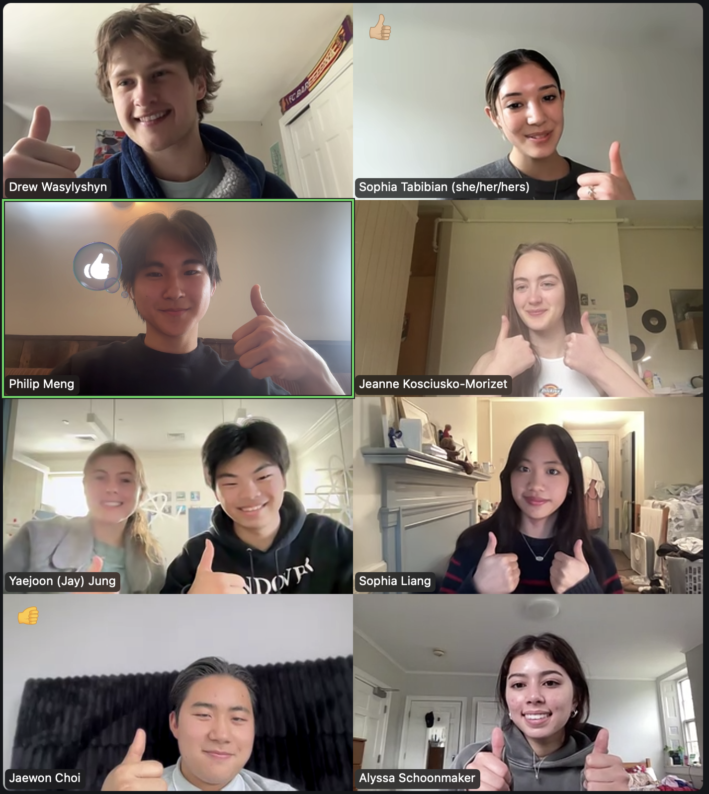
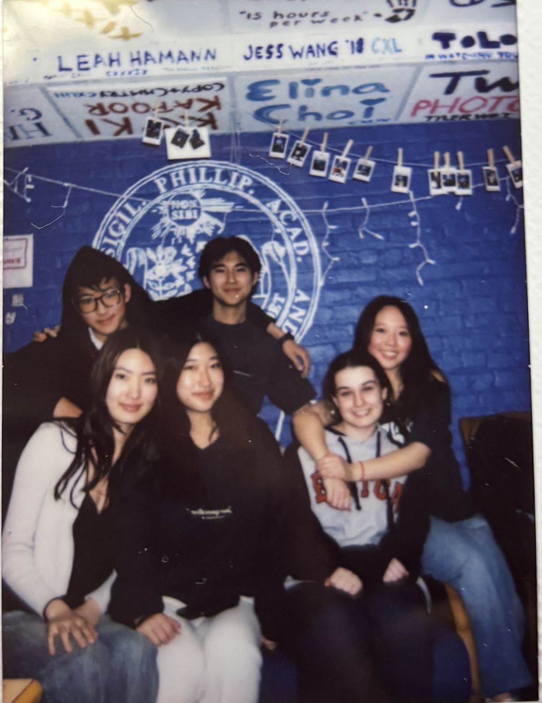
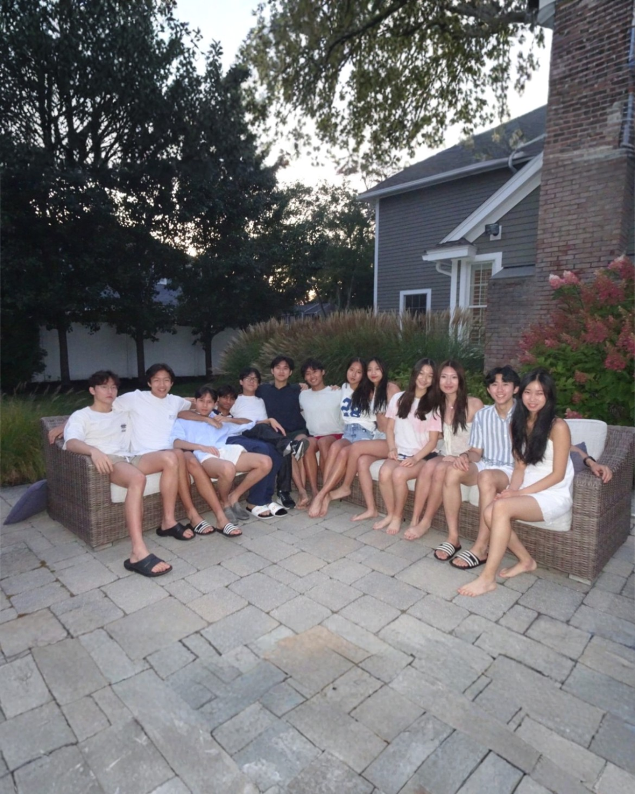
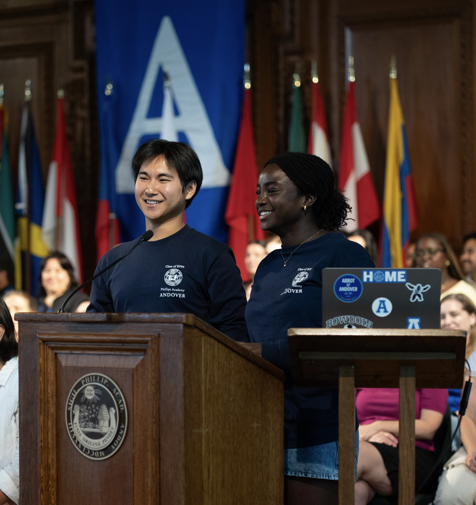
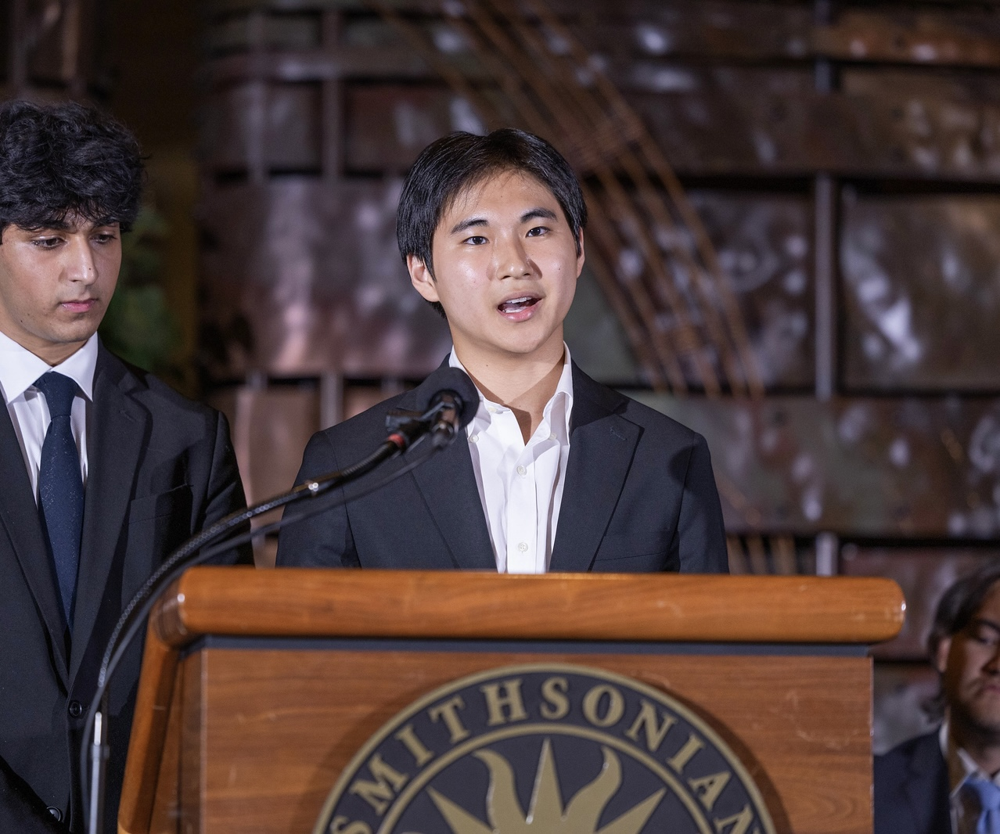
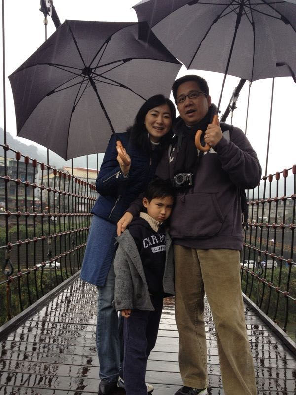

About
I study electrical engineering, computer science, and history at Stanford.
Most recently I co-founded Shepherd (YC S26), working on making hardware legible to AI. Before that I was school co-president at Phillips Academy Andover.
I’m also a venture partner at 645 Ventures, did ML research at Stanford’s Freeman Spogli Institute, and NLP research at Dartmouth.
I grew up in Hong Kong and Massachusetts. Huge fan of Dominic Fike, Kazuo Ishiguro, and Scent of a Woman.
Recognition
- Coca-Cola Scholar
- Davidson Fellows Scholarship
- US Senate Youth Program Finalist
- NeurIPS HS Track Spotlight Award
- US Squash High School National Championships - 6th place
- US Squash Scholar-Athlete (4x)
Writings
View a few frames along the way







